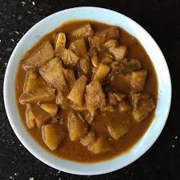

🍛 Theeyal Recipe

Ingredients
- 1 cup chopped vegetables (like pearl onions, drumstick, or ridge gourd)
- 1/2 cup grated coconut
- 2 tsp coriander seeds
- 1 tsp cumin seeds
- 2 dried red chilies
- 1/2 tsp fenugreek seeds
- 1/4 tsp turmeric powder
- 1 gooseberry-sized tamarind
- 1/2 tsp mustard seeds
- Curry leaves
- Salt to taste
- 2 tbsp coconut oil
Instructions
- Dry roast grated coconut until dark brown. Add coriander, cumin, red chilies, and fenugreek; roast and grind to a paste.
- Soak tamarind in warm water and extract juice.
- Cook vegetables with salt and turmeric until tender.
- Add tamarind extract and boil for 5 minutes.
- Add ground coconut paste and simmer until oil separates.
- Temper mustard seeds and curry leaves in coconut oil; add to theeyal.
- Serve hot with rice.
Serve With
- Steamed Rice
- Papad
- Pickles
🌰 Tip: Roasting the coconut well is key to authentic theeyal flavor.